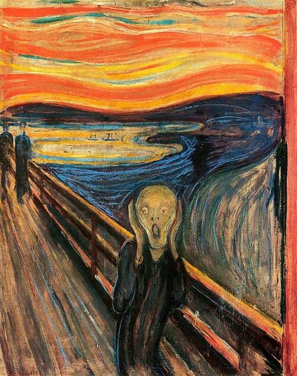
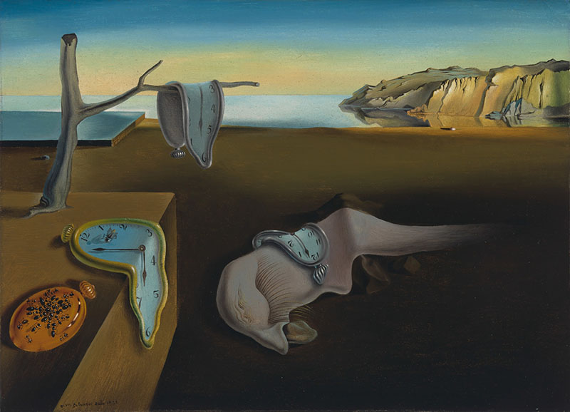

Artista com muito potencial,porém,muito a frente da sua época,sabe se que morreu sem ao menos ter vendido uma arte mas nos dias atuais este homem teve seu reconhecimento diante da era moderna.
Noite Estrelada é uma pintura de Vincent van Gogh de 1889. A obra retrata a vista da janela de um quarto do hospício de Saint-Rémy-de-Provence, pouco antes do nascer do sol, com a adição de um vilarejo idealizado pelo artista. A tela faz parte da coleção permanente do Museu de Arte Moderna de Nova Iorque desde 1941. É considerada uma das mais famosas pinturas de Van Gogh e uma das mais icônicas da arte
A persistência da memória, de Salvador Dalí

Para algumas pessoas esta arte é bizarra e para outras é linda,pois,algumas pessoas conseguem absorve mais informações que outras,dessa forma fica a seu critério o que vc acha.
Vemos ao fundo com um tom de cores quentes, em oposição ao rio em azul, cor fria, que sobe acima do horizonte, caracter do expressionismo (onde o que interessa para o artista \u00e9 a express\u00e3o de suas ideias e n\u00e3o um retrato da realidade). Vemos que a figura humana em cores frias, como a cor da ang\u00fastia e da dor, sem cabelo para demonstrar um estado de . Os elementos descritos estudo tortos, como se reproduzindo o grito dado pela figura, como se entortando com o berro, algo que reproduza as ondas sonoras. Quase tudo est\u00e1 torto, menos a ponte e as duas figuras que est\u00e3o no canto esquerdo. Tudo que se abalou com o grito e com a cena presenciada est\u00e1 torto; quem n\u00e3o se abalou (supostamente seus amigos) e a ponte, que \u00e9 de concreto e n\u00e3o \u00e9 "natural" como os outros elementos, continua reto.
A dor do grito estudo presente no personagem, mas também no fundo, o que destaca que a vida para quem sofre sob pressão como as outras pessoas a enxergam, a paisagem fica dolorosa tamb\u00e9m, e talvez por essa caracter\u00edstica do quadro tudo que nos identificamos tanto com ele e podemos sentir a dor e o grito dado pelo personagem. Inserindo-se o observador no quadro, ele passa a ver o mundo torto, disforme, e isso afeta diretamente a participa da mesmo na obra, de forma quase interativa.

A persistência da memória é uma obra de 1931 pintada pelo surrealista Salvador Dalí.
O trabalho, que pode ser visto no Museu de Arte Moderna de Nova York (MoMa), possui dimensões de 24 x 33 cm e foi produzido com a técnica de óleo sobre tela.
Esse é um dos mais representativos quadros do artista catalão. A composição traz elementos absurdos em um cenário onírico, ou seja, aquele que somos transportados quando estamos sonhando. Tal característica é bastante marcante dentro do surrealismo.
O processo de criação da obra
A história da arte possui algumas obras que se tornaram ícones, tanto de movimentos artísticos quanto de seus autores. Sem dúvida, esse é o caso de A persistência da memória.
Segundo o próprio autor, a tela foi concebida em um momento de indisposição, quando, ao recusar um passeio com a esposa, o artista fica em sua casa pintando.
Forma
A tela A persistência da memória pertence ao movimento surrealista e data de 1931
Assim, em um curto período de tempo, Dalí criou o que seria uma de suas telas mais prestigiadas. Ele declarou ainda que teve como inspiração a imagem de queijos camembert derretidos que havia comido poucas horas antes.
Entretanto, é importante ressaltar que, para os surrealistas, o processo de criação estava totalmente relacionado ao mundo psíquico, do qual eles extraíam ao máximo a inspiração, baseando-se no automatismo e imagens do inconsciente.
Complemente seus estudos, leia também: Surrealismo.
Os significados ocultos em A persistência da memória
Essa é uma composição de dimensões relativamente pequenas. Entretanto, a cena que foi gerada é tão instigante que segue aguçando a curiosidade do público e despertando interesse sobre as possíveis interpretações que os objetos representados possuem.
se vc chegou até aqui obrigado,é bom ver que alguém tenha visitado este pequeno site